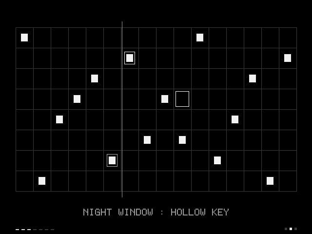

LILT
a musical grid

A musical grid for small computers. Place notes on a sixteen by eight grid and let them loop, then shape the sound with echo, space, pace and wobble across nine voices in three sound banks.
Every sound is generated as it plays. Headphones are worth it.
Handheld (PortMaster)
lilt.zip18 KB · In testing.
Install on a handheld
- You need a Linux handheld with PortMaster installed.
- Copy
lilt.zip, still zipped, into theautoinstallfolder inside PortMaster on your SD card. - Open PortMaster once. LILT installs itself and appears under Ports.
Controls
| D-pad | move (hold to keep moving) |
| A | place notes (hold to paint) |
| B | remove notes (hold to erase) |
| X | empty the pattern |
| Y | change wobble |
| L1 and R1 | change pace |
| L2 and R2 | change voice |
| Select and left or right | change echo |
| Select and up or down | change space |
| Start | rest or resume |
| Select and X | fresh start |
| Select and Start | exit |
Notes
A small native program using the system SDL2 library. No runtime and no bundled files. Made for 640 by 480 screens; it letterboxes on others.
LILT is freeware. You are welcome to share unmodified copies.